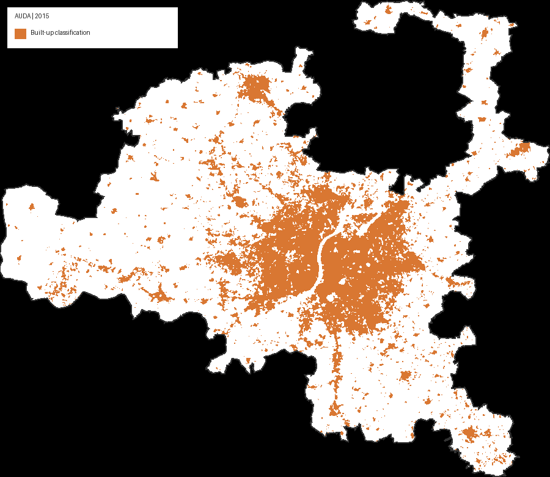

Interactive GIS and remote sensing study · Gujarat, India
Ahmedabad Urban Climate Explorer
Exploring urban expansion and environmental change across the Ahmedabad Urban Development Authority (AUDA) region between 2015 and 2025. Select indicators, explore maps and charts, and watch the uploaded time-series animations.
Study scope: AUDA region, not Ahmedabad Municipal Corporation (AMC). Flood susceptibility outputs are preliminary.
01 · Temporal analysis
Watch the region change over time
Explore the uploaded animations of built-up expansion, vegetation, land surface temperature and relative heat anomaly.

Animations play automatically when supported by your browser.
Built-up expansion, 2015–2025
Animated visualisation of built-up area change over the study period.
Open animation separatelyAll animations
Interactive exploration
Explore the indicators
Choose an indicator to view its findings and associated map.
Finding
Built-up area change, 2015–2025
Method / context
02 · Spatial analysis
Maps gallery
Browse the spatial outputs for urban growth, vegetation, temperature, rainfall, terrain and preliminary flood susceptibility.
03 · Quantitative evidence
Charts and statistical analysis
Browse the uploaded statistical charts. Filter by subject or search for a specific indicator.
Project documentation
Read the full report
Consult the report for the study design, data sources, methods, results and interpretation.
Open project report (PDF)